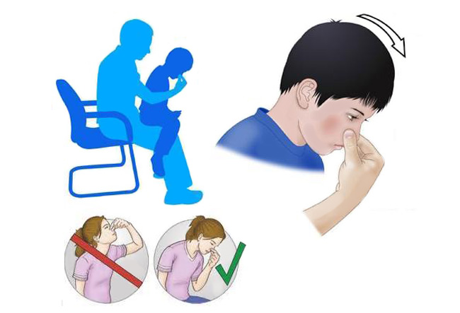

Неожиданные кровотечения (так же известные как эпистаксисы) в определенные моменты случаются в жизни почти каждого ребенка и являются одной из самых распространенных проблем, с которыми мы сталкиваемся. Носовые кровотечения часто начинаются ни с того ни с сего — как правило, из одной ноздри, и могут сильно напугать как родителей, так и детей. К счастью, практически во всех случаях с носовыми кровотечениями можно легко справиться.
ПРИЧИНА
Внутри носа есть скопление крошечных кровеносных сосудов, которые называются капиллярами. Эти капилляры расположены на центральной стенке носа — носовой перегородке. Из-за того, что они находятся близко к поверхности, они могут выбухать и кровоточат, когда раздражены. Три главных причины повторяющихся кровотечений у детей: ковыряние в носу, аллергические риниты и сухой воздух.
ЧТО ДЕЛАТЬ
Ковыряние в носу — это «нельзя-нельзя». Самая распространенная причина повторяющихся носовых кровотечений у детей — ковыряние в носу. Дети могут делать это по привычке или из-за дискомфорта в носу, который облегчается при ковырянии. При этом могут травмироваться кровеносные сосуды на носовой перегородке, что приводит к их разрыву и кровотечению.
СОВЕТ ДОКТОРОВ СИРС: ДЕТЕКТИВ, РАССЛЕДУЮЩИЙ КОВЫРЯНИЕ В НОСУ Поскольку дети, как правило, не считают свои пальцы виновниками, у себя в офисе при расспросе мы пользуемся таким трюком: вместо того чтобы спрашивать детей, ковыряются ли они в носу, мы спрашиваем: «Каким пальцем ты ковыряешься в носу?» Не успев подумать, они быстро поднимают указательный палец на одной руке. |
Проводите профилактику аллергии. Аллергический ринит — одна из самых распространенных причин носовых кровотечений у детей. Зуд в носовых проходах провоцирует чесание и ковыряние, которые приводят к тому, что и без того уже чувствительная и воспаленная слизистая носовых проходов еще больше раздражается и кровоточит. Помимо отвлечения маленьких ручек, когда они по привычке тянутся к зудящему носу, коротко подстригите ногти своего ребенка и используйте следующие домашние средства для поддержания комфорта в носу, чтобы не нужно было ковыряться. Начните с очищения спальни от аллергенов:
Прочищайте нос. Еще одна распространенная причина повторяющихся носовых кровотечений — ОРЗ. Когда у ребенка ОРЗ, слизистая носовых ходов становится отечной и воспаленной. В таком состоянии даже легкая деятельность, такая как чихание, кашель или растирание носа, может вызвать носовое кровотечение.
Увлажняйте нос. Высохшая носовая слизь раздражает и забивает нос, чем провоцирует малыша ковыряться пальчиками в носу. Включите испаритель горячего пара, который имеет двойное преимущество. Повышенная влажность в спальне размягчит слизь и сделает ее менее раздражающей и уменьшит высушивающий эффект центрального отопления.
КАК ЛУЧШЕ ВСЕГО ОСТАНОВИТЬ НОСОВОЕ КРОВОТЕЧЕНИЕ
У большинства детей носовые кровотечения можно остановить, просто сдавив большим или указательным пальцем нос с боков примерно посередине, в том месте, где носовая кость переходит в хрящ. Обычно приходится сдавливать хотя бы 10 минут, чтобы не допустить возобновления носового кровотечения. Посадите своего ребенка и наклоните его голову немного вниз, а не назад. Это не даст крови протечь к спинке носа и далее в горло, из-за чего ребенок может подавиться кровью или проглотить ее.
Если через 10—15 минут полноценного сдавливания носа кровь продолжает свободно течь, попробуйте скатать из ваты или ткани шарик размером с ноздрю. Смочите его прохладной водой.

СОВЕТ ДОКТОРОВ СИРС: ОСТОРОЖНОЕ ВЫСМАРКИВАНИЕ Научите ребенка прочищать нос осторожно, без особых усилий, которые могут спровоцировать кровотечение. |
Вставьте тампон в кровоточащую ноздрю. Снова сдавите нос, как описано в предыдущем шаге. Тампон позволяет лучше сдавить место кровотечения. Оставьте тампон внутри на час, затем очень осторожно выньте его, чтобы не сместить свернувшуюся кровь и не спровоцировать продолжение кровотечения.
Если у вашего ребенка наблюдаются какие-либо другие симптомы, такие как бледность, головокружение, учащенное дыхание или слишком частый пульс, немедленно отвезите его в больницу.
ПРОФИЛАКТИКА ПОВТОРЯЮЩИХСЯ НОСОВЫХ КРОВОТЕЧЕНИЙ
Носовые кровотечения могут снова повториться вскоре после первого раза. Это происходит из-за того, что на месте кровотечения внутри носа сформировался сгусток крови. Он легко может сместиться из-за чихания, потирания носа или ковыряния в носу.
Мы обычно рекомендуем родителям через 15 минут после того, как носовое кровотечение удалось остановить, начать аккуратно впрыскивать в нос раствор поваренной или морской соли и делать так несколько раз в день. Это промоет засохшую кровь и сгусток крови. После этого смажьте носовые ходы, например, вазелиновым маслом или ланолиновой мазью. Это может предотвратить новое носовое кровотечение сразу же после первого.
Повторяющиеся носовые кровотечения могут быть признаком затаившего аллергического ринита. Некоторые назальные спреи и другие лекарства могут помочь контролировать симптомы аллергии, при этом регулируя носовые кровотечения. Во, время обследования носа ваш врач обычно может определить, являются ли носовые кровотечения последствием аллергий.
Повторяющиеся носовые кровотечения могут быть также вызваны бактериальной инфекцией. Ваш врач сможет увидеть это при осмотре. Безрецептурную мазь с антибиотиком (такую же, какая наносится на порез) можно аккуратно вводить в полость носа пальцем два раза в день в течение двух недель. Аккуратно вотрите мазь, сжав ноздри. Если это не поможет, возможно, стоит попробовать более сильную рецептурную мазь.
КОГДА НАДО ОБРАЩАТЬСЯ К ЛОР-ВРАЧУ
Если носовые кровотечения у вашего ребенка продолжаются несмотря на профилактические меры, описанные выше, это может означать, что носовые кровеносные сосуды очень большие и легко повреждаются. ЛОР- врач может прижечь их, чтобы не допустить новых кровотечений. Если это не помогает, в редких случаях повторяющиеся носовые кровотечения могут быть признаком неспособности крови правильно свертываться. У ребенка с нарушением свертывания крови могут быть и другие симптомы наряду с повторяющимися носовыми кровотечениями, например, у него:
Если ваш врач подозревает нарушение свертываемости крови, он назначит анализы крови.
Здоровье ребенка от докторов Сирс / Сирс У. и др.